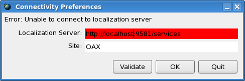
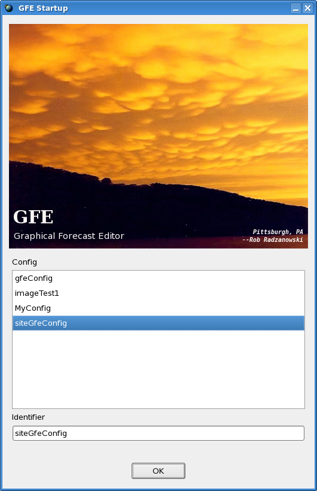

runGFE [-h hostname] [-p portNumber] [-c configFile] [-u userName]
[-t networkTimeout] [-m mutableModel] [-z drtTime] [-f specialMode]
[-a]
[-i
dbCategories]
| Command Line Option | Optional? | Meaning |
| -h hostname | YES | Identifies the hostname upon which the ifpServer is running. During installation, this value is automatically set, but may be overridden. |
| -p portNumber | YES | Identifies the RPC portnumber upon which the ifpServer is running. During installation, this value is automatically set, but may be overridden. |
| -c config | YES | Identifies the gfe configuration file to use for the session. If the -u and -c switches are specified, then the startup dialog will not contain entry boxes for the user to choose the config file. |
| -u username | YES | Specifies the user id to be used for the GFE session. This affects the availability of metadata to the GFE. See the base, site, and user configuration guide for details. If the -u and -c switches are specified, then the startup dialog will not contain entry boxes for the user to choose the username. |
| -t networkTimeout | YES | Normally defaults to 60 seconds. In heavy network situations, may need to increase this value to prevent the GFE/ifpServer from timeouts. |
| -m mutableModel | YES | The mutable model is stored in the gfe configuration file. It can be overriden through this switch. Note that the format is in the form of type_model or type_model_time, such as "_Fcst" or "_NAM_20021002_1200. |
| -z drtTime | YES | The GFE may be started in the Displaced
Real Time Mode. |
| -f specialMode |
YES |
By default, this switch is not
provided. If provided, will bring up the GFE in a special
mode. The two special modes supported are TEST
and PRACTICE.
These modes are product-generation specific. |
| -i dbCategories | YES | The database viewable categories are stored in the gfe
configuration
file. It can be overriden through this switch. Note that
the
format does not normally include the time. The normal format is
type,
such as "" for no-type or "D2D" for d2d-type databases. There can
be multiple -i switches. |
| -a |
YES |
Force AWIPS mode. If this
switch is set, then the -f switch determines the only possible modes
that are available to choose from. For example, with -f TEST and
no -a switch, the GFE is started in TEST mode but can be switched to
PRACTICE or OPERATIONAL mode. With the -f TEST and -a switch, the
GFE is started in TEST mode and cannot be switched to another mode. |
|  |

The user positions the cursor over the START button and
clicks.
The GFE will now start and just the splash screen will be shown:
If the GFE does not come up properly, ia
bad configuration file is likely the cause and a dialog shows the
location of the error:
Once the GFE is running, there will be no weather elements appearing
in the grid manager. One weather element will be loaded, of a
persistent
nature, into the spatial editor. This element is called Topo SFC
Topo_EditTopo. You can edit the topography and once saved, the
remainder
of the GFESuite system will see the modified topography when those
programs
are started.